|
|
||||
|
轨道交通教学课件 管理系统v1.0 |
||||
|
用户使用手册 |
||||
|
昆明学易多媒体技术有限公司
|
版权声明
学易文字及徽标是昆明学易多媒体技术有限公司（以下简称：学易公司）在中国的商标或注册商标。
《轨道交通仿真教学课件管理系统》是学易公司独立开发的拥有自主知识产权的软件产品。学易文字及徽标为学易公司或关联公司注册商标或商标，受法律保护，学易公司拥有以上内容（包含但不限于）的专利、专利申请、商标、版权或其它知识产权。
未经学易公司或商标权人书面许可，任何单位及个人不得以任何方式或理由对该商标和软件产品的任何部分进行使用、复制、修改、传播、抄录或与其它产品捆绑使用销售。凡侵犯本公司商标和软件产品权的，我公司必依法追究其法律责任。
前 言
本手册是用来指导轨道交通仿真教学课件管理系统用户使用本系统，在培训过程中可以作为教程使用。本手册所适应的读者是使用轨道交通仿真教学课件管理系统的所有用户。
在这个产业不断升级，社会不断进步的时代，我们发扬积极、拼搏、进取的精神，以高度的责任感去完成“让更多的人更容易地掌握更实用的技能”的使命，所以研发了轨道交通仿真教学课件管理系统。
基于网络化运用的轨道交通仿真教学课件管理系统提供一个开放、自主的海量课件资源库运用，教师用户可以根据自身的教学需求，从平台的海量课件资源中通过简单的拖拽组合快速生成自己的课件。快速生成的课件不仅能满足自己的教学要求，还可与同一网段内的教师、学员共同分享课件。注册学员可使用课件并对课件进行点评和星级评分，教师用户可根据学员的点评及评分不断优化完善自己的课件，系统管理员可对优化后的课件进行等级设置。
由于编者水平有限，希望大家能够提出宝贵意见，以逐步完善本规范手册的内容。
目录
课件操作说明
§1.1课件操作说明
§1.1.1运行
（一）双击桌面快捷方式
运行课件，或在开始菜单中选择运行课件。课件正常运行后出现下图：
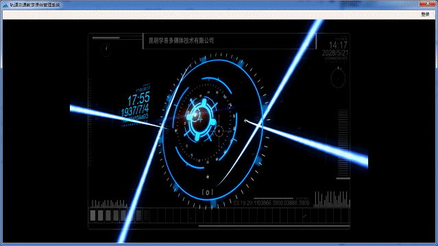
§1.1.2登录
（二）单击进入登录界面出现下图：
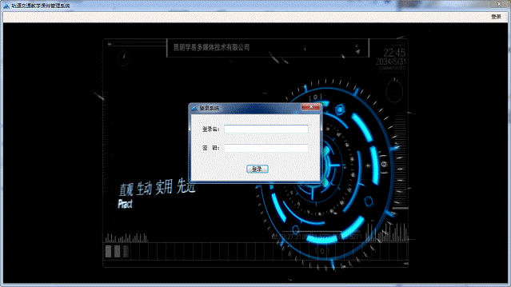
登录名分为超级管理员和教师,两种权限的账号,教师账号登录后进入主界面出现下图：
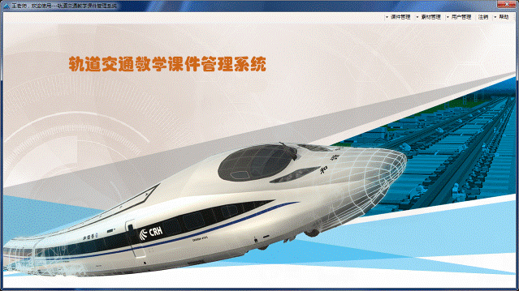
注：自定义课件部分可以理解为个人的学习笔记，它可以把课件中各种分类的内容根据个人需要归结到自定义的菜单中，本部份导航区支持重命名（即修改节点标题名），可以命名为个人需要的菜单名称，从而针对软件中的知识要点进行个性化的系统归纳，方便使用者在学习过程中挑选出需学习知识的重点要点。
具体操作步骤如下：
§1.1.3课件管理
§1.1.3.1自定义课件
1. 单击后再点击后，出现下图： 出现的列表是当前教师所添加的自定义课件列表。
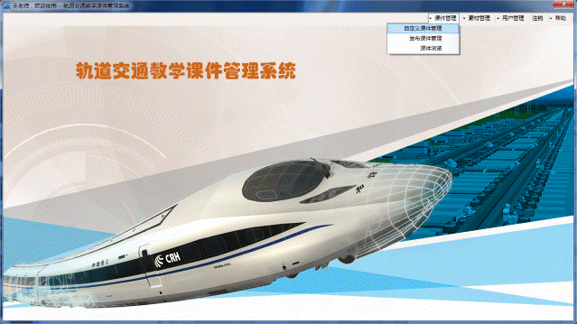
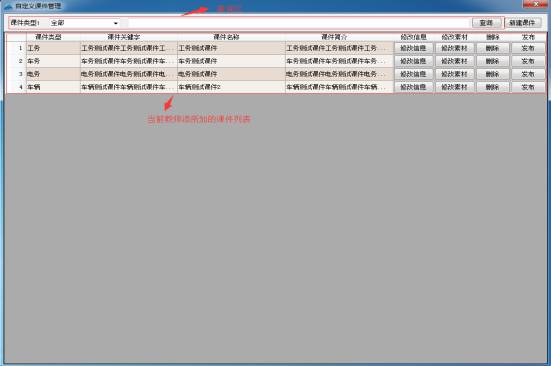
(1)查询区--可按类型和条件查询,条件查询可输入包含在课件名称、课件简介、课件关键字的字眼来筛选查询。
(2)单击后出现下图：
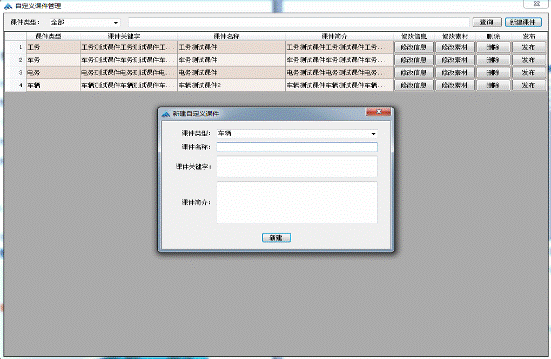
(3)添加完成单击 ,成功添加后列表中将显示刚刚新建 的课件。
,成功添加后列表中将显示刚刚新建 的课件。
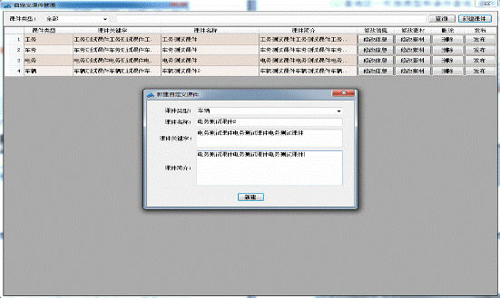
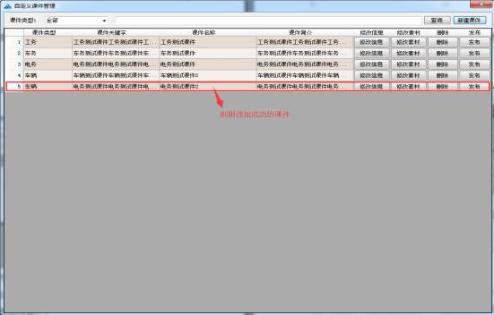
(4)如新建后发现有误填信息,在填错的那项中单击进行修改,或单击后重新“新建课件”。
(5)确定添加无误后可在对应的那项中单击进行素材 的编入,如下图：
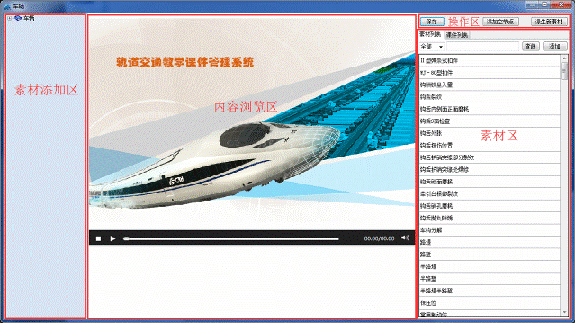
(6)素材区又分为“课件列表”和“课件列表”如下图：
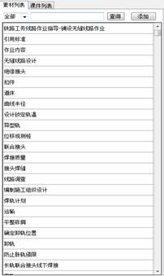
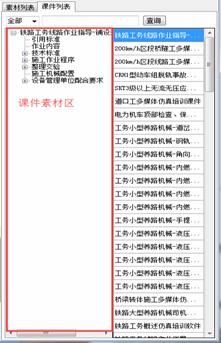
(7)用素材列表来编入素材时：可按素材名称进行筛选查询来定位,选中要编入的素材后点击即可(添加时可按 住Ctrl多选后再添加),单击到任意素 材后中间的内容预览区会播放素材的内容。
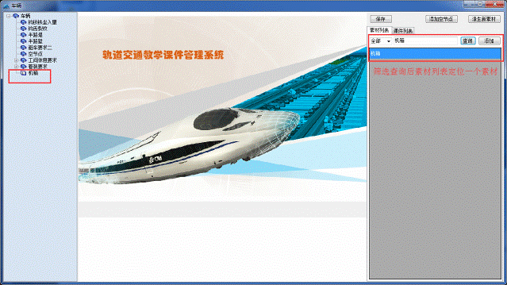
(8)用课件列表来编入素材时：选中需要的课件后“课件素材区”出现该课件中的所有课件素材,把需要的课件素材拖放到要编入的课件中去,如下图：
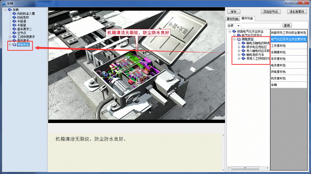
(9)如想在课件中编入没有内容的子目录可单击后在添加过来的空节点上右键选来修改名称。
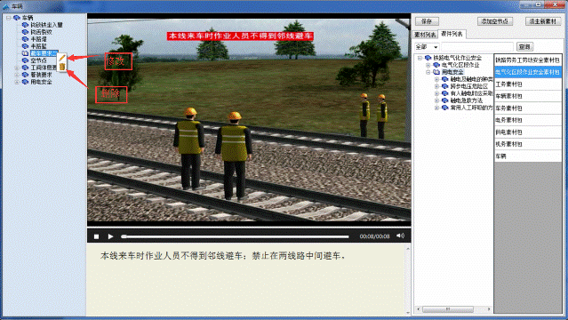
(10)编入完成单击存入数据库, 完成后回到“自定义课件管理”找到修改好的那条课件单击后此课件就可以被其他账号浏览学习了。
(11)如果觉得某个素材内容不错但文字和配音想自己另外制作或另选时,可以选中这个素材后单击,如下图：
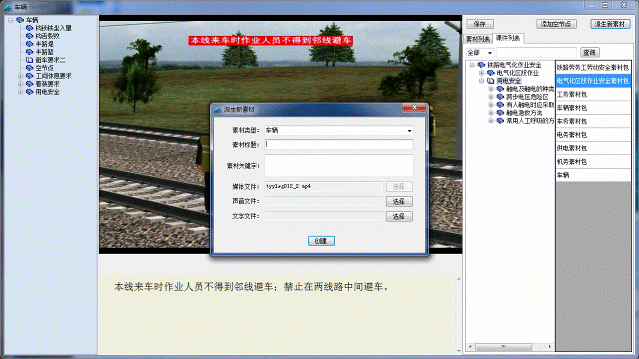
此时弹出的“派生新素材”窗中媒体文件已经选定,其他项可以另外选取,完成后单击存入数据库。
§1.1.3.2 发布课件管理
2. 单击后再点击后，出现下图： 出现的列表是当前教师成功发布的课件列表。
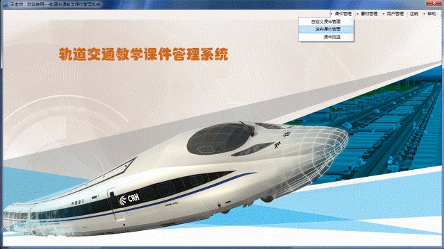
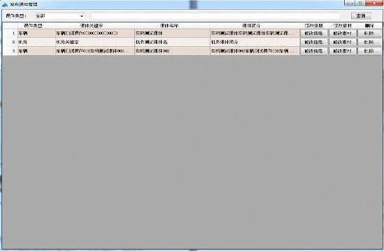
(1)列表中所有操作都和“自定义课件管理”一样,只是这里管理的是成功发布的课件。
§1.1.3.2课件浏览
3. 单击后再点击后，出现下图：出现的列表是所有教师成功发布的课件列表,可供大家浏览学习。
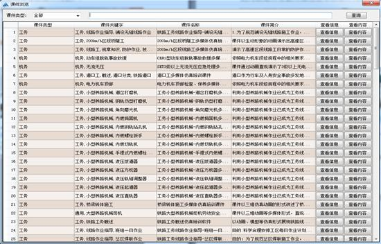
(1)单击可以查看对应的课件信息,如下图：
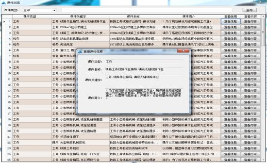
(2)单击 可以查看对应的课件教学内容,如下图：
可以查看对应的课件教学内容,如下图：
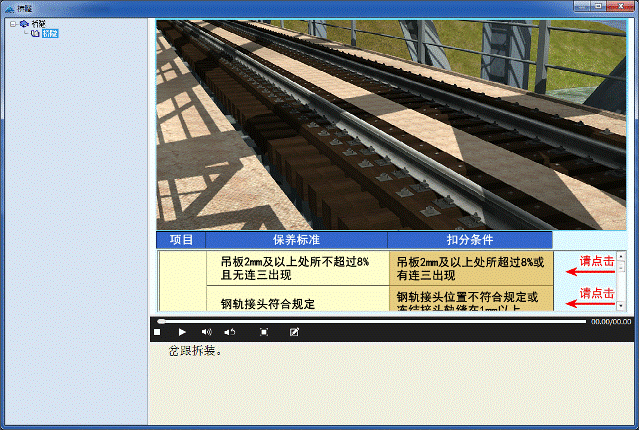
(3) 如果媒体内容中出现提示红色的字时，提示区域也是可以单击的。
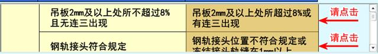
(4)如果媒体内容中出现等是可以按需求单击 的。
§1.1.4素材管理
§1.1.4.1自定义素材管理
4. 单击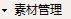后再点击后，出现下图：出现的列表是当前教师自定义素材列表。
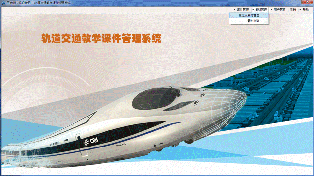
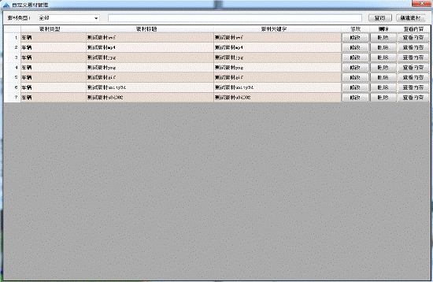
(1)这里添加的素材都可以被其他账号浏览、学习和引用编入课件。
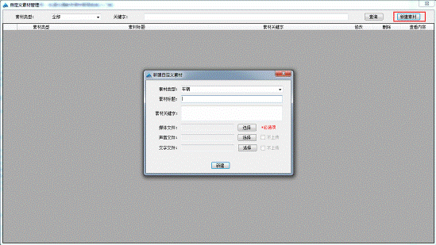
(2)当新建素材时媒体文件选择的是mp4时,声音文件和文字文件可以选择不上传,系统将使用空声音和空文字文件。
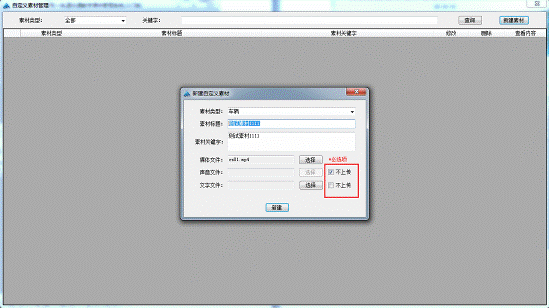
(3)其他所有操作都与之前的相同。
§1.1.4.2素材浏览
4. 单击后再点击后，出现下图：出现的列表是所有素材列表。
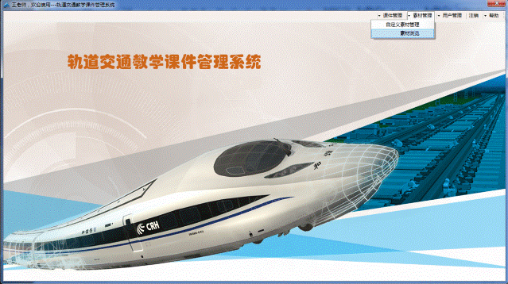
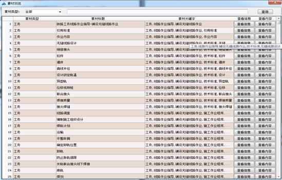
§1.1.5用户管理
§1.1.5.1修改密码
5. 单击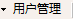后再点击后，出现下图：
(1)可修改当前账号的密码。
§1.1.5.2修改个人资料
6. 单击后再点击后，出现下图：
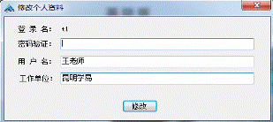
(1)输入正确的密码后可修改当前账号的信息。
§1.1.6注销
7. 单击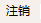后将退出当前登录状态。
§1.1.7帮助
§1.1.7.1用户使用操作手册
8. 单击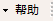后再点击后，出现下图：
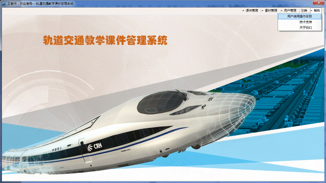
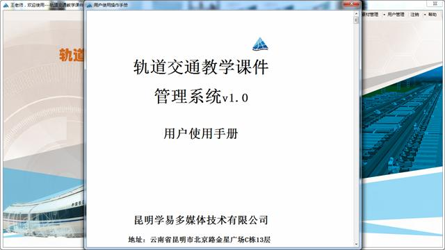
(1)可查看用户使用操作手册。
§1.1.7.2技术支持
8. 单击后再点击后，出现下图：
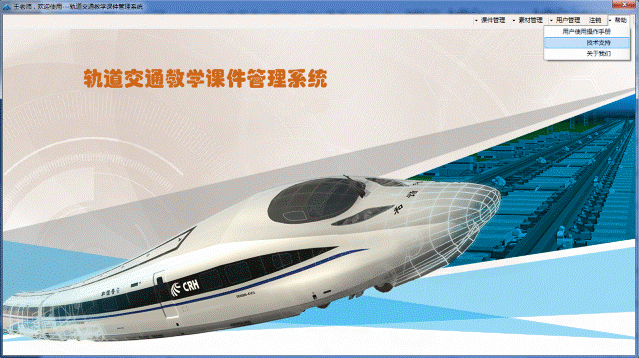
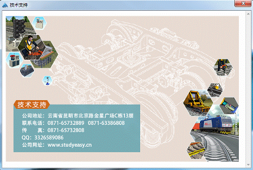
(1)可查看昆明学易的相关信息。
§1.1.7.3关于我们
9. 单击后再点击后，出现下图：
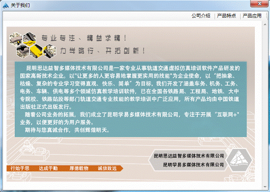
(1)可查看公司简介、产品特点和产品应用相关信息。
§1.1.8超级管理员用户
10.如果是超级管理员用户,还可单击后再点击后，出现下图：
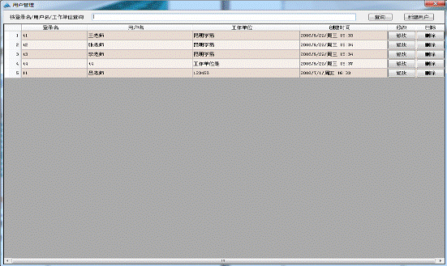
(1)可以对所有教师账号信息进行新建、修改、删除操作。
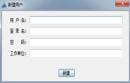 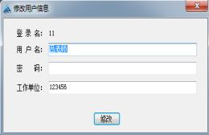